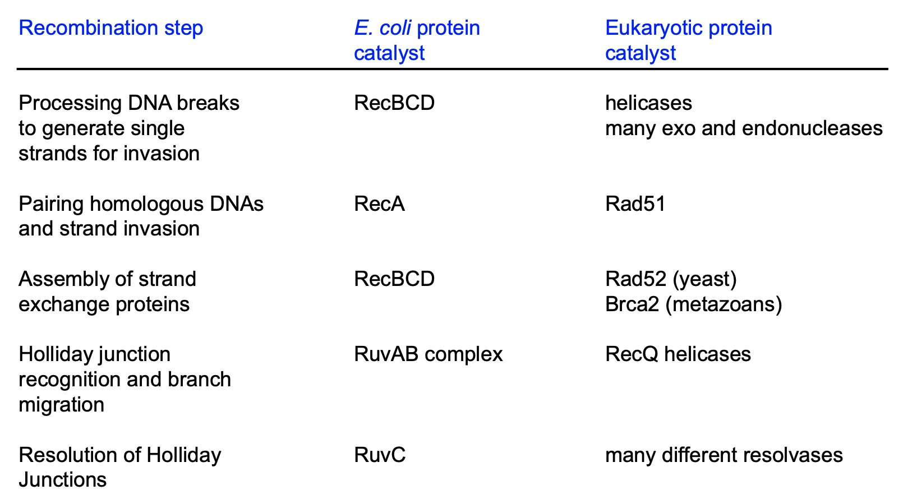

Overview
- 1. Evaluate the experimental evidence for semiconservative, semidiscontinuous, and bi-
- directional DNA replication.
- 2. Draw a bi-directional replication fork, showing 5’ and 3’ ends, and identify the location of bacterial replication proteins relative to the fork.
- 3. Describe how the structures of the proteins involved in DNA replication help to support their roles.
- 4. Explain how the trombone model of DNA replication allows for coordination of leading and lagging strand synthesis in bacteria.
- 5. Compare and contrast mechanisms of replication initiation and termination in bacteria and eukaryotes.
- The main difference between prokaryotic and eukaryotic DNA replication is that prokaryotic DNA replication occurs through a single origin of replication whereas eukaryotic DNA replication occurs through multiple replication origins.
- 6. Identify characteristics of replication origins and explain how they are identified using both genetic and genomic methods.
- 7. Explain how replication is temporally regulated and coordinated with the cell cycle in eukaryotes.
- 8. Give examples of how water, oxygen, and chemicals can damage DNA.
- 9. Match different types of DNA damage with the corresponding repair system.
- 10. Describe the molecular mechanisms and identify key proteins in the mismatch repair, base excision repair, and nucleotide excision repair pathways.
- 11. Give two examples of mechanisms by which cells tolerate DNA damage during replication.
- 12. Diagram the steps by which non-homologous end joining, homologous recombination with crossovers, and synthesis-dependent strand annealing can be used to repair a DNA double-strand break.
- 13. Name the proteins involved in homologous recombination in bacteria and describe their roles.
- 14. Give examples of how defects in DNA repair systems can cause human diseases, including cancer.
- 15. Describe the origins of zinc finger nucleases, TALENS, and the CRISPR-Cas9 system and explain how these editing techniques have been adopted to promote double-strand break formation at specific sites in the genome.
- 16. Predict how double-strand break repair pathway choice will influence the outcomes of genome editing experiments.
- 17. Compare and contrast the mechanisms of homologous recombination, site-specific recombination, and transposition.
- 18. Given various starting DNA substrates, predict whether site-specific recombination will result in insertion, deletion, or inversion of DNA segments.
- 19. Describe the mechanisms of Cre-lox and FLP-FRT mediated site-specific recombination. Give examples of how these are used to edit genomes.
- 20. List the 3 main classes of transposons, explain how they transpose, and give examples of each.
- 21. Explain how transposons can be used to create transgenic organisms and to mutate genomes.
Enzymes
DNA Replication Synthesis
- DnaB helicase
- RNA primase(create primer)
- Polymerase III (do synthesis based on primer)
- Polymerase I (Remove primer, exonuclease)
- Ligase
- Beta sliding clamp.
DNA Replication Initiation
Bacteria
- Initiator: bind at the replicator(near A-T rich and easily melted area)
- DnaA: It goes to wrap the DNA around it.
- HU: is going to cause the formation of an open-complex.
- DnaC: helicase loader complex
- DnaB helicase
- SeqA: Bind to hemi-methylated DNA to prevent combination of dam methylase
- Dam methylase: doing methylation.
DNA Replication Termination
Bacteria
- Tus: bind to ter site to prevent replication in one direction.
Mismatch Repair
Bacteria
- MutS: detect hemi-methylated strand
- MutS-MutL complex: scan DNA bidirectionally, forming a loop. It is looking for the GATC hemi-methylated sides.
- MutH: recruited by MutS-MutL to cleave the newly synthesized unmethylated GATC sequence.
- Helicase(UvrD)
- Endonuclease/polymerase I
- Polymerase III
- Ligase
Eukaryote
- ORC: Origin recognition complex
- Mcm2-7: DNA helicase
- Cdt1, Cdc6: Helicase Loader.
- CDK, DDK: protein kinase like DDK and CDK will give helicase the signal to do unwinding.
Direct Reversal
Methyltransferase: reverse Methyl Group
Base Excision Repair
Bacteria
- Glycoslyase: produce a abasic site
- AP endonuclease: remove the abasic site
- Polymerase I: synthesize the removed sites
- Ligase
Eukarytotes
- Glycoslyase: produce a abasic site
- AP endonuclease: remove the abasic site
- Polymerase I: synthesize the removed sites(long patch)
- Polymerase beta: short patch
- Ligase
Nucleotide Excision Repair
Bacteria
- UvrA/B: recognizes damage
- UrvC: exinuclease
- UvrD: helicase
- Polymerase I
- Ligase
Eukarytotes
- XPC/XPB/XPD: recognize
- RPA/XPF/XPG: exinuclease
- Helicase
- Polymerase
- Ligase
Translesion Synthesis
- Polymerase III
- beta clamp
- Pol IV or Pol V (TLS polymerase)
Fork Regression(fork stalls)
- Some proteins use ATP hydrolysis to reverse the fork
- Nuclease
Double-Strand Break Repair
- Ku70-Ku80: proteins bind ends and protect
- DNA-PKcs and Artemis: Artemis is a nuclease
- XLF, XRCC4, Ligase IV
Homologous Recombinatino
Bacteria
RecBCD, RecA, RuvAB complex, RuvC
Eukaryote
helicases, many exo and endonucleases, Rad51, Rad52, Brca2, RecQ helicases, many different resolvases

CRISPR
Cas9 nuclease
CSSR
Recombinase
Transposition
- Transposase
- DNA polymerase
- DNA ligase
CRISPR/Cas9
The mechanism of CRISPR/Cas-9 genome editing can be generally divided into three steps: recognition, cleavage, and repair.
1. Recognition
The designed sgRNA directs Cas-9 and recognizes the target sequence in the gene of interest through its 5ʹcrRNA complementary base pair component. The Cas-9 protein remains inactive in the absence of sgRNA. The Cas-9 nuclease makes double-stranded breaks (DSBs) at a site 3 base pair upstream to PAM.14 PAM sequence is a short (2–5 base-pair length) conserved DNA sequence downstream to the cut site and its size varies depending on the bacterial species. The most commonly used nuclease in the genome-editing tool, Cas-9 protein recognizes the PAM sequence at 5ʹ-NGG-3ʹ (N can be any nucleotide base).
2. Cleavage
Once Cas-9 has found a target site with the appropriate PAM, it triggers local DNA melting followed by the formation of RNA-DNA hybrid, but the mechanism of how Cas-9 enzyme melts target DNA sequence was not clearly understood yet. Then, the Cas-9 protein is activated for DNA cleavage. HNH domain cleaves the complementary strand, while the RuvC domain cleaves the non-complementary strand of target DNA to produce predominantly blunt-ended DSBs.
3. Repair
Finally, the DSB is repaired by the host cellular machinery.
Assays
Incorporation Assays
Primer Extension Assays
Summary of mechanisms for dealing with DNA damage
1. Base mismatches/ base damage
- Base excision repair removes base damage
- Nucleotide excision repair removes damage that disttorts the helix
- Mismatch repair corrects mispaired bases due to erroneous insertion during DNA replication
2. Bypass Damage
Y-family DNA polymerase replicate past DNA damage
3. Strand breaks
- Non-homologous end joining repairs
- Homologous recombination repairs
Review: Different Genome Editing Systems
- Site-specific recombination (Cre-lox, FLP-FRT)
- Transposons (Tn10, Sleeping Beauty)
- Genome editing nucleases (ZFNs, TALENs, CRISPR)